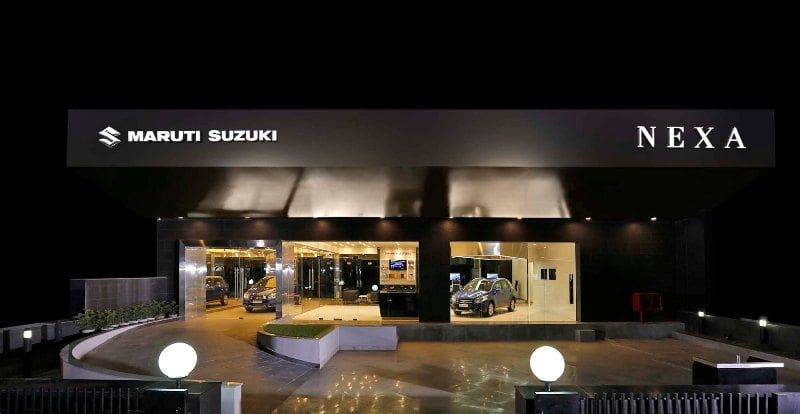
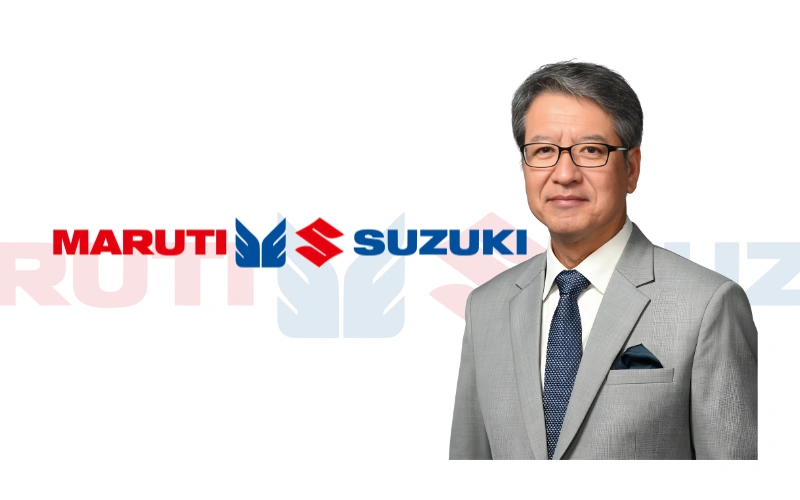

Welcome to Maruti Suzuki ARENA
HOME
ABOUT US
CARS
Login


Quality You Can Trust
At Toyota, we uphold the philosophy of continuous improvement (Kaizen) because we believe that there is always scope to do better. It is this very philosophy that drives us towards quality, making it a way of life at Toyota. The tradition at Toyota has always been to provide premium quality cars backed with reliable services to our customers. We ensure that the quality meets the international standards while keeping in mind the local sensitivities. Our firm belief in putting customers first has constantly enabled us to respond effectively to your needs, whether in terms of quality, service or the driving experience. Toyota's renowned reputation of Quality Durability and Reliability (QDR) has led our steady growth in the Indian automotive market. We are proud to declare that over 1 million Indians are part of the ever growing Toyota family. We also strive towards developing a more sustainable future and being pioneers in the Hybrid Technology is our first step towards this movement. Through initiatives focused on education, community development and the environment, we aim to create a company that works in harmony with nature and society. I would like to thank all our partners who have been instrumental in our growth. We look forward to strengthening our relationship with you and welcome you to be a part of the Toyota family.
OUR MOST VALUABLE ASSET - OUR EMPLOYEES
At Toyota, the philosophy of Mutual Trust and Respect is at the core. Our employees are vital and inevitably the most valuable asset. We aim to provide a stable employment and world-class working conditions balanced with the progress of the company.
EMPOWERING EMPLOYEES
AEmployees are the main source of inspiration and strength for a company. We, at Toyota, strive to reflect 'Continuous Improvement' and 'Respect for People' in all our activities. Employee suggestions are taken very seriously and implemented to improve the working.